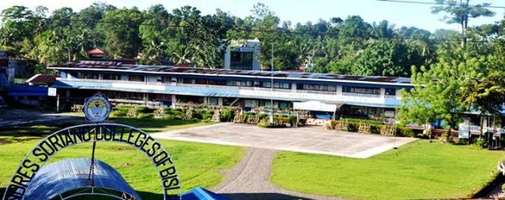

ABOUT ASCB
HISTORY
ASCB History
Andres Soriano College was founded in 1951 as a consequence of the tenacious efforts of people who thought that children should be developed holistically. Situated in Mangagoy, the college sought to meet the educational needs of the expanding populace, which included laborers from businesses like PICOP and BBLCI. With the support of committed civic-minded people like Mr. Godofredo M. Manila and Mr. Marcelo Ligas, Andres Soriano College got its start in a modest 13-room nipa building, housing hundreds of eager learners. The college was founded on the principles of faith and a dedication to offering a top-notch education. The Board of Trustees and the administrative team put up a lot of effort to make sure the school fulfilled the requirements set by the Department of Education.
The professors, who are the center of the institution, were instrumental in forming the school's character. The goal of the faculty screening procedure was to choose teachers who were committed to the institution's mission of fostering moral and spiritual qualities in their pupils. Andres Soriano College aspired to be more than just a place of higher learning; it also wanted to better the community and serve the needs and interests of its people.

After Andres Soriano College was given the all-clear to open for business in 1952, courses began on June 12 with 139 students enrolled. Being the first department of its kind and the college's main source of funding, the establishment of the day high school department was very noteworthy. The school's main goals were to instill in the students a feeling of moral responsibility and to fight illiteracy by offering a top-notch education. Eventually, the students were expected to become law-abiding, admirable citizens. The thriving Paper Mill industry contributed to a notable enrollment boom at Andres Soriano College in the exciting 1980s. The number of students flocked to our institution increased year after year as the labor force grew. The enrollment figures peaked in 1979—1980 with an astounding gain of 397 students, representing a growth of 17.92% in just ten straight school years. The ASC suffered comparable challenges to those that the PICOP faced. Enrollment dropped by a startling 25.60% as a result of teacher layoffs and financial difficulties that prevented many students from completing their education. Still, the committed instructors of Andres Soriano College persisted, emphasizing the need of teaching moral principles in their students.
On July 19, 2014, tragedy struck ASCB as the institute faced a devastating fire. The destruction engulfed most of the school, sparing only the open gym and elementary building but ASCB remained steadfast in its commitment to providing education towards students. Despite the challenges posed by the current state, makeshift classrooms have been set up to ensure continuity in learning.
Through faith and resilience, ASCB rose again from the ashes. It embarked on a journey of rebuilding, introducing new structures such as the JHS building and the Old Building. Later, the completion of the new three-storey building marked a significant milestone in the institute's revival.